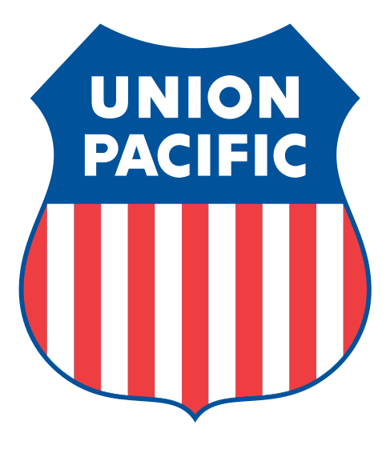

Senior Core Solution Engineer July 2021 - Present
- Engage in pre-sales activities to understand challenges and build custom solutions using the Salesforce platform
- Run workshops and advise customers on best practices across Sales, Service, Analytics, and other core business processes
- Provide expertise on Salesforce products and new releases throughout the year

Manager Corporate Strategy April 2021 - July 2021
- Partnered with external consultants to find new solutions to growth challenges across all business units
- Presented project progress and findings to senior leadership including CFO, CIO, CMO and COO
- Engaged in extensive research utilizing a proprietary approach to improve the customer experience
Loup: A Union Pacific Company
Manager Strategic Solutions July 2019 - April 2021
- Led transition from heritage Siebel CRM to Salesforce Sales Cloud for 120+ users
- Provided internal Salesforce change management training to end users
- Created workflows to automate sales opportunity management processes
Lead Sales Executive Mexico July 2016 - July 2019
- Actively engaged & managed 40+ Mexico agricultural industry customers worth $250M in annual revenue
- Exceeded established business development goals with new and existing customers
- Developed cross-functional and creative logistical solutions to gain Mexico market share
Business Manager Chemicals May 2014 - July 2016
- Managed 12 key chemical customer relationships worth over $80 MM
- Led negotiations that maximized Union Pacific's share of the customer's transportation portfolio
- Engaged in market and customer research to achieve assigned volume and revenue targets
Business Manager Mexico April 2012 - May 2014
- Provided in-depth and ad-hoc analyses and presentations for M&S Mexico VP and AVP
- Prepared and managed reports that measure the Mexico team’s performance, including biweekly outlook documents
- Collaborated across business groups to provide detailed market research and analysis
Revenue Account Manager April 2010 - April 2012
- Managed freight receivables for medium-large Agricultural customers
- Analyzed and packaged customized data for both internal and external customers
- Conducted quality and timely review of Customer Satisfaction Survey issues